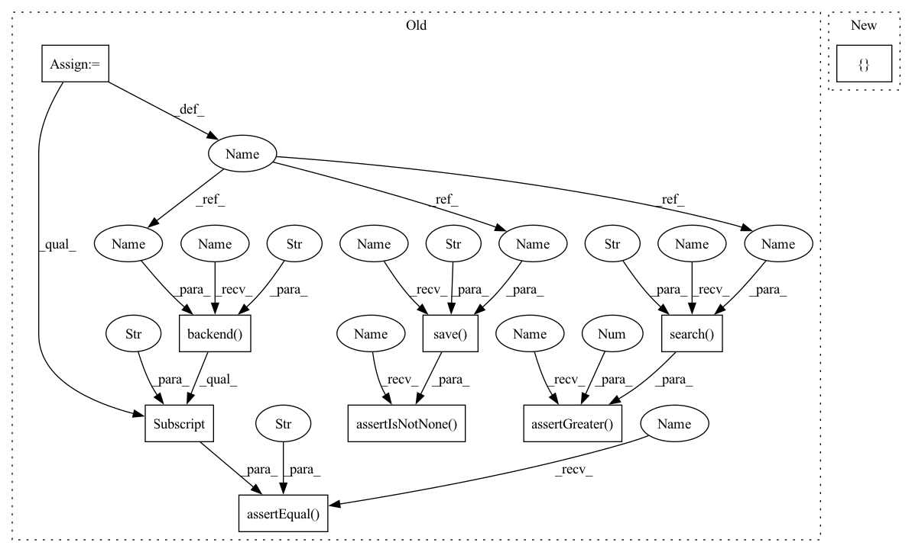

Pattern ID :16510

Before Change
// Test with custom settings
config = {"annoy": {"ntrees": 2, "searchk": 1}}
self.assertEqual(self.backend("annoy", config).config["backend"], "annoy")
self.assertIsNotNone(self.save("annoy", config))
self.assertGreater(self.search("annoy", config), 0)
@unittest.skipIf(os.name == "nt", "Faiss not installed on Windows")
def testFaiss(self):
After Change
// Test with custom settings
self.runTests("annoy", {"annoy": {"ntrees": 2, "searchk": 1}}, False)
@unittest.skipIf(os.name == "nt", "Faiss not installed on Windows")
def testFaiss(self):
In pattern: SUPERPATTERN
Frequency: 3
Non-data size: 9
Instances
Fragment ID: 55458382
Project Name: neuml/txtai
Commit Name: 75ec616e2a2feeefe0707f5af201c74f0da5cee3
Time: 2021-05-11
Author: 561939+davidmezzetti@users.noreply.github.com
File Name: test/python/testann.py
M Class Name: TestANN
N Class Name: TestANN
M Method Name: testAnnoyCustom(1)
N Method Name: testAnnoyCustom(1)
M Parent Class: unittest.TestCase
N Parent Class: unittest.TestCase
M File Name: test/python/testann.py
N File Name: test/python/testann.py
M Start Line: 34
M End Line: 38
N Start Line: 32
N End Line: 32
'>
Before Change
// Test with custom settings
config = {"hnsw": {"efconstruction": 100, "m": 4, "randomseed": 0, "efsearch": 5}}
self.assertEqual(self.backend("hnsw", config).config["backend"], "hnsw")
self.assertIsNotNone(self.save("hnsw", config))
self.assertGreater(self.search("hnsw", config), 0)
def backend(self, name, params=None, length=10000):
Test a backend.
After Change
// Test with custom settings
self.runTests("hnsw", {"hnsw": {"efconstruction": 100, "m": 4, "randomseed": 0, "efsearch": 5}})
def testNotImplemented(self):
'>
Fragment ID: 55458383
Project Name: neuml/txtai
Commit Name: 75ec616e2a2feeefe0707f5af201c74f0da5cee3
Time: 2021-05-11
Author: 561939+davidmezzetti@users.noreply.github.com
File Name: test/python/testann.py
M Class Name: TestANN
N Class Name: TestANN
M Method Name: testHnswCustom(1)
N Method Name: testHnswCustom(1)
M Parent Class: unittest.TestCase
N Parent Class: unittest.TestCase
M File Name: test/python/testann.py
N File Name: test/python/testann.py
M Start Line: 80
M End Line: 84
N Start Line: 64
N End Line: 64
'>
Before Change
// Test with custom settings
config = {"faiss": {"nprobe": 2, "components": "PCA16,IDMap,SQ8"}}
self.assertEqual(self.backend("faiss", config).config["backend"], "faiss")
self.assertIsNotNone(self.save("faiss", config))
self.assertGreater(self.search("faiss", config), 0)
def testHnsw(self):
Test Hnswlib backend
After Change
// Test with custom settings
self.runTests("faiss", {"faiss": {"nprobe": 2, "components": "PCA16,IDMap,SQ8"}}, False)
def testHnsw(self):
'>
Fragment ID: 55458384
Project Name: neuml/txtai
Commit Name: 75ec616e2a2feeefe0707f5af201c74f0da5cee3
Time: 2021-05-11
Author: 561939+davidmezzetti@users.noreply.github.com
File Name: test/python/testann.py
M Class Name: TestANN
N Class Name: TestANN
M Method Name: testFaissCustom(1)
N Method Name: testFaissCustom(1)
M Parent Class: unittest.TestCase
N Parent Class: unittest.TestCase
M File Name: test/python/testann.py
N File Name: test/python/testann.py
M Start Line: 59
M End Line: 63
N Start Line: 49
N End Line: 49